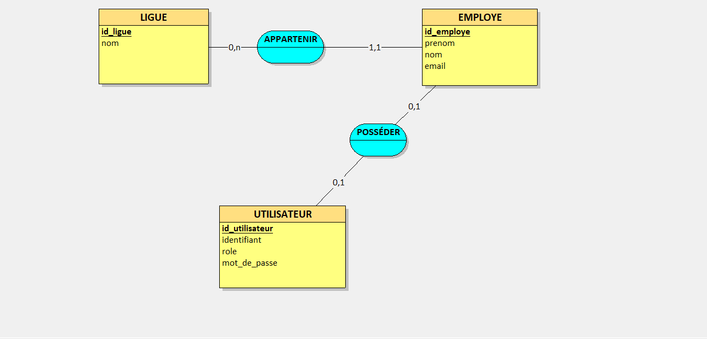
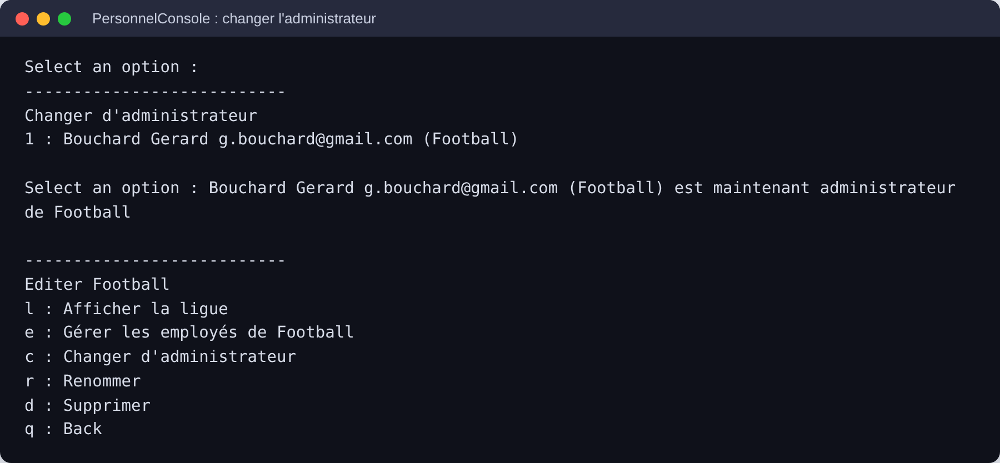
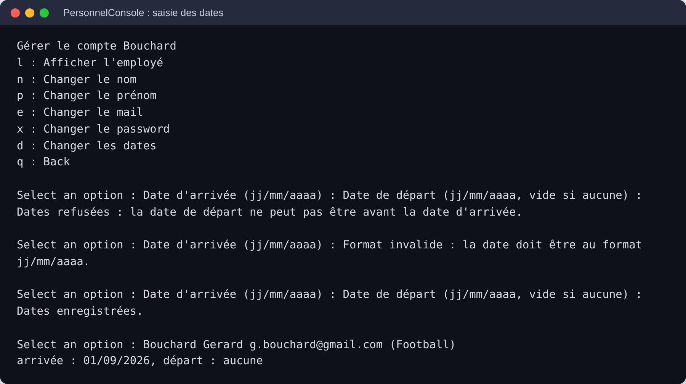
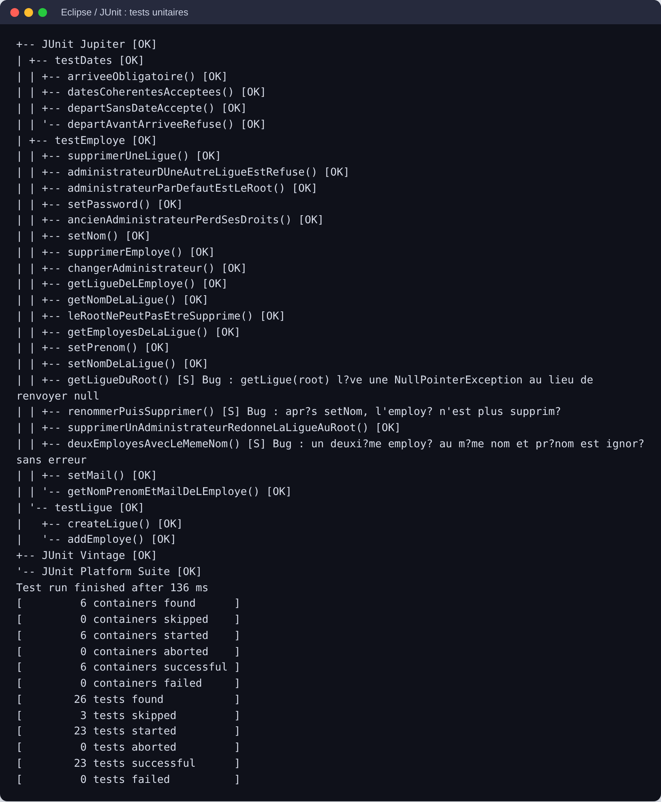
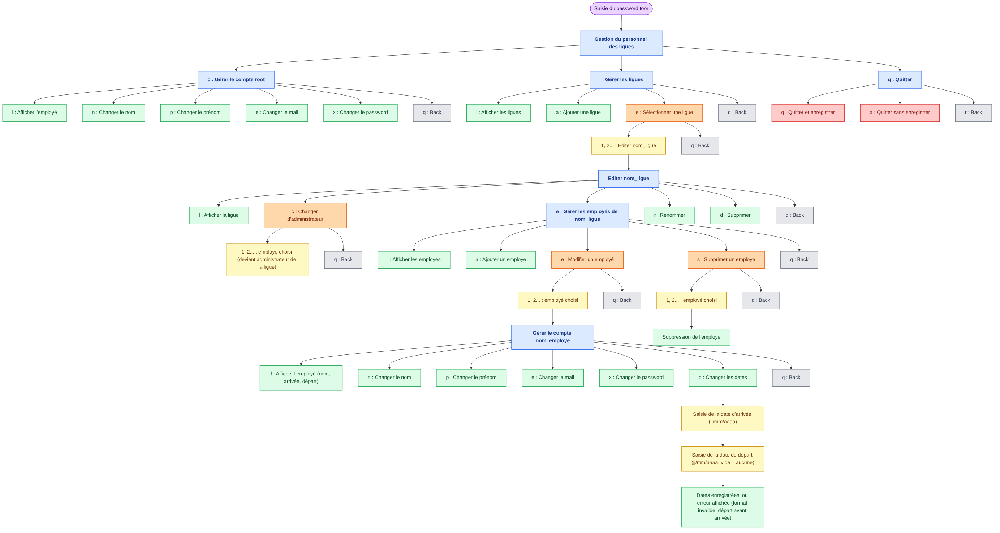

En bref
Le projet « M2L » est un exercice de groupe de BTS SIO. Il faut développer une application qui gère les ligues d'une organisation et leurs employés. Chaque employé appartient à une seule ligue. Une ligue a un administrateur, et un super-utilisateur (le root) gère l'ensemble.
Le sujet demande aussi une architecture en trois niveaux, une sauvegarde des données d'une session à l'autre, et des tests unitaires. Ma partie : le changement d'administrateur et la saisie des dates en ligne de commande, ainsi que les tests.
Les ressources fournies et ce que j'ai dû faire
On ne partait pas de zéro. Voici ce que le projet nous a donné :
- Le code de départ : un dépôt GitHub d'un autre développeur (alexandreMesle/personnel), que j'ai forké dans mon compte pour travailler dessus.
- Une bibliothèque de menus pour la ligne de commande (CommandLineMenus 2.0), qui gère les écrans, les options et les listes.
- Un MCD et un script SQL, réalisés par un camarade du groupe (voir la section MCD).
- Les consignes et grilles d'évaluation sur Moodle : arbre heuristique, tests unitaires, Git.
Ce que j'ai fait
Première partie : les tests et la documentation
- Arbre heuristique : un schéma de tous les menus et options, avec une couleur différente pour les menus, les options et les listes (voir la section arbre).
- Tests unitaires JUnit 5 : les setters (nom, prénom, mail, mot de passe), la suppression d'un employé et d'une ligue, le changement d'administrateur. J'ai aussi ajouté un test pour la remarque du professeur : « et l'ancien administrateur ? ». Quand on change d'administrateur, l'ancien perd bien ses droits.
-
Bugs documentés : trois tests sont désactivés avec
@Disabled, car ils révèlent des bugs réels. Par exemple, renommer un employé après l'avoir ajouté casse sa suppression. Plutôt que de cacher ces bugs, je les ai laissés visibles et expliqués.
Deuxième partie : les nouvelles fonctions en ligne de commande
-
Changer l'administrateur d'une ligue : dans le menu d'une ligue, l'option
c : Changer d'administrateuraffiche les employés de la ligue. Si l'employé choisi n'appartient pas à cette ligue, un message d'erreur s'affiche au lieu de faire planter le programme. -
Saisir les dates d'arrivée et de départ : dans le menu d'un employé, l'option
d : Changer les datesdemande les dates au formatjj/mm/aaaa. Une date impossible comme le 31/02 est refusée. Une date de départ vide signifie « aucune ». - Tests des dates : quatre tests vérifient qu'une date de départ avant l'arrivée est refusée, qu'une arrivée est obligatoire, et qu'un départ vide est accepté.
La règle qui protège les dates tient en quelques lignes :
public void setDates(LocalDate arrivee, LocalDate depart)
{
if (arrivee == null)
throw new IllegalArgumentException("la date d'arrivée est obligatoire.");
if (depart != null && depart.isBefore(arrivee))
throw new IllegalArgumentException("la date de départ ne peut pas être avant la date d'arrivée.");
this.dateArrivee = arrivee;
this.dateDepart = depart;
}Le programme ne garde donc jamais une combinaison incohérente. Le menu attrape l'erreur et l'affiche à l'utilisateur.
Modèle conceptuel de données (MCD)

Lire le MCD
- Une ligue regroupe 0 à n employés, et chaque employé appartient à 1 seule ligue (APPARTENIR).
- Un employé possède 0 ou 1 compte utilisateur, et un compte correspond à 0 ou 1 employé (POSSEDER).
Captures d'écran
Les captures ci-dessous montrent la sortie réelle du programme et des tests lors de mon dernier passage.



Arbre heuristique des menus
L'arbre montre comment on passe d'un écran à l'autre. Les menus sont en bleu, les options en vert, les listes de choix en orange, et les retours (« Back ») en gris.

Liens
Code source
- Dépôt GitHub du projet (m2l-personnel)
- Arbre des menus en Mermaid (fichier docs/arbre_heuristique.md)
Documentation utilisée
- JUnit 5 : guide d'utilisation (écrire et lancer les tests)
- Java : LocalDate (les dates sans heure)
- Java : DateTimeFormatter (le format jj/mm/aaaa)
- Mermaid : diagrammes de flux (l'arbre des menus)
Bilan
Le plus utile a été les tests. Les consignes Moodle le rappellent : que le programme fonctionne ne suffit pas comme critère de qualité. Les trois tests désactivés m'ont montré des cas que je n'avais pas imaginés en écrivant le code.
Côté Git, j'ai appris à versionner mes changements et à rendre le travail lisible pour mes camarades, car l'évaluation de chacun se voit dans les commits.